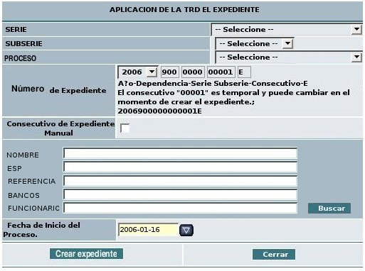
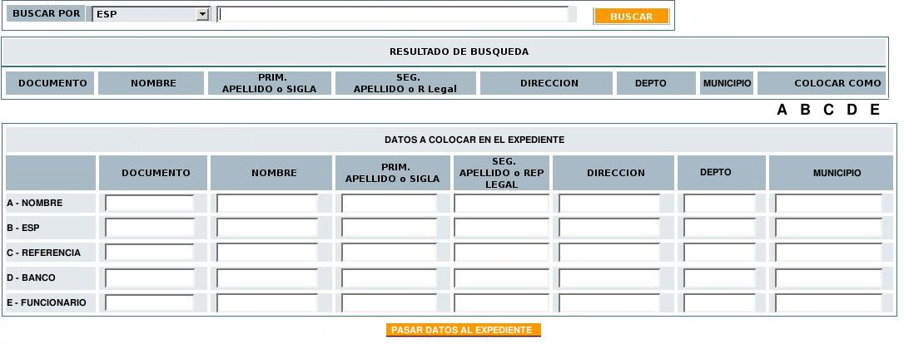
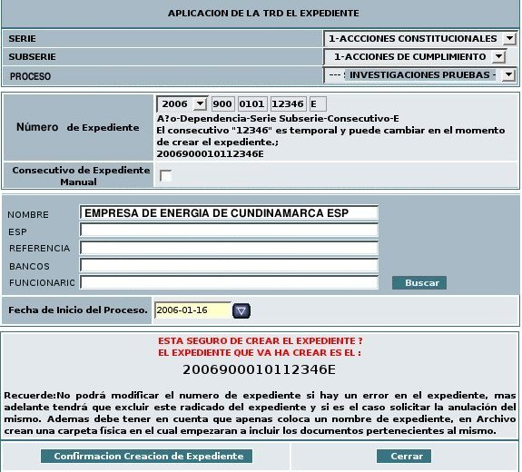
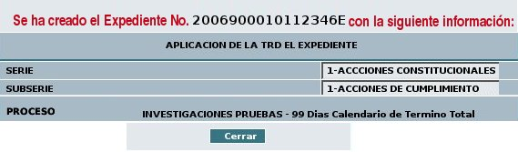

4. S: Despliega la ventana para seleccionar los datos del expediente basándose en la Tabla de Retención Documental de la dependencia.

4.1 Una lista desplegable rotulada "SERIE" con los datos de serie
documental que se encuentra asociada a la dependencia.
4.2 Una lista desplegable rotulada "SUBSERIE" con las subseries pertenecientes a la serie seleccionada.
4.3 Una lista desplegable rotulada "PROCESO" con los diferentes procesos que se hayan parametrizado para las serie y subserie seleccionada.
4.4 Una combinación de datos rotulada como "NUMERO DE EXPEDIENTE", teniendo en cuenta:
4.4.1 Lista desplegable con el año al cual pertenece el expediente.
4.4.2 Dependencia que crea el expediente
4.4.3 Combinación de serie y subserie seleccionada en el punto 4.1 y 4.2
4.4.4 Número consecutivo que se crea del expediente. Se tiene en cuenta el número que continua de acuerdo a la serie y subserie.
4.4.5 Indicador de expediente por medio de la letra "E"
4.5 Check box para indicar si se desea generar el "Consecutivo de Expediente Manual", es decir el usuario digita el número de expediente a crear.
4.6 Una sección de cajas de texto de acuerdo a la necesidad de la dependencia las cuales deben ser parametrizar, con un botón "Buscar"
4.7 Objeto Calendario que permite seleccionar la "Fecha de inicio del Proceso"
4.8 Un botón "Crear Expediente" , el cual se visualiza en el momento que se selecciona la serie
4.9 Un botón "Cerrar"
4.2 Una lista desplegable rotulada "SUBSERIE" con las subseries pertenecientes a la serie seleccionada.
4.3 Una lista desplegable rotulada "PROCESO" con los diferentes procesos que se hayan parametrizado para las serie y subserie seleccionada.
4.4 Una combinación de datos rotulada como "NUMERO DE EXPEDIENTE", teniendo en cuenta:
4.4.1 Lista desplegable con el año al cual pertenece el expediente.
4.4.2 Dependencia que crea el expediente
4.4.3 Combinación de serie y subserie seleccionada en el punto 4.1 y 4.2
4.4.4 Número consecutivo que se crea del expediente. Se tiene en cuenta el número que continua de acuerdo a la serie y subserie.
4.4.5 Indicador de expediente por medio de la letra "E"
4.5 Check box para indicar si se desea generar el "Consecutivo de Expediente Manual", es decir el usuario digita el número de expediente a crear.
4.6 Una sección de cajas de texto de acuerdo a la necesidad de la dependencia las cuales deben ser parametrizar, con un botón "Buscar"
4.7 Objeto Calendario que permite seleccionar la "Fecha de inicio del Proceso"
4.8 Un botón "Crear Expediente" , el cual se visualiza en el momento que se selecciona la serie
4.9 Un botón "Cerrar"
5. A: Selecciona los datos solicitados de serie, subserie, proceso, número de expediente y selecciona el botón "Buscar" en caso de desear alimentar información adicional al expediente.
6. S: Despliega el formulario de búsqueda de datos para expedientes con la siguiente información:

Sección "Buscar por":
6.1 Una lista desplegable donde se indican las opciones de búsqueda de acuerdo a lo que se haya parametrizado en el sistema.
6.2 Una caja de texto habilitada para buscar que permita de acuerdo al dato seleccionado
Sección "Resultado de búsqueda":
6.3 Lista de los nombre o items encontrados de acuerdo al criterio seleccionado y el cual se encuentra en la base de datos. Se debe visualizar los datos de documento, nombre, prim. apellido / sigla, seg. apellido / Rep. Legal, dirección, depto, municipio.
6.4 Opción de selección indicado con letra para ubicar los datos que se requieran en el expediente.
Sección "Datos a colocar en el expediente":
6.5 Items parametrizados los cuales se actualizan de acuerdo a lo que el usuario seleccione en la sección "Resultado de Búsqueda".
6.6 Botón habilitado "Pasar datos al Expediente"
7. A: Realiza las opciones de búsqueda diligenciando los datos que requiere y selecciona el botón "Pasar Datos al Expediente"
8. S: Alimenta la información de acuerdo a lo que ha seleccionado el usuario.

7. A: Da click en el botón "Crear Expediente"

6. S: Despliega la confirmación de la transacción donde se indica:
6.1 ESTA SEGURO DE CREAR EL EXPEDIENTE?
EL EXPEDIENTE QUE VA A CREAR ES EL: XXXXXXXXXXXXXE
6.2 Se realiza la observación al usuario para que tenga en cuenta el proceso a realizar:
Recuerde:No podrá modificar el numero de expediente. Si hay un error en el expediente, mas adelante tendrá que excluir este radicado del expediente y si es el caso solicitar la anulación del mismo. Además debe tener en cuenta que tan pronto se cree el expediente, en el área de Archivo crean una carpeta física en la cual empezarán a incluir los documentos pertenecientes al mismo.
6.3 Un botón habilitado "Confirmación Creación de Expediente"
6.4 Un botón habilitado "Cerrar"
6.2 Se realiza la observación al usuario para que tenga en cuenta el proceso a realizar:
Recuerde:No podrá modificar el numero de expediente. Si hay un error en el expediente, mas adelante tendrá que excluir este radicado del expediente y si es el caso solicitar la anulación del mismo. Además debe tener en cuenta que tan pronto se cree el expediente, en el área de Archivo crean una carpeta física en la cual empezarán a incluir los documentos pertenecientes al mismo.
6.3 Un botón habilitado "Confirmación Creación de Expediente"
6.4 Un botón habilitado "Cerrar"
7. A: Selecciona el botón "Confirmación Creación de Expediente"
8. S: Valida la información enviada por el usuario conformando el expediente y alimenta las tablas respectivas en la base de datos.
8. S: Realiza la confirmación de creación del Expediente indicando los parámetros creados:

9. A: Da click en el botón "Cerrar"
10. S: Cierra la ventana y actualiza la infomación en la vista "EXPEDIENTES" presentando al usuario dos secciones con la siguiente información:
Sección uno: Información general del expediente:
10.1 Lista desplegable con la lista de los expedientes en los cuales se encuentra incluido el radicado.
10.2 Caja de texto inhabilitada rotulada "Número del expediente", en esta caja aparece el nombre del expediente que se haya seleccionado en el punto 10.1.
10.3 Link rotulado "Incluir En" para anexar el radicado en un expediente existente
10.4 Link rotulado "Excluir de" si se desea sacar el radicado de algún expediente al cual ya se encuentra asociado.
10.5 Link rotulado "Crear" si se desea crear un nuevo expediente donde irá el radicado.
10.6 Rótulo llamado "TRD" indicando la serie y subserie seleccionada en el punto 4.
10.7 Rótulo llamado "Proceso" al cual se encuentra asociado dicho expediente, en caso de tenerlo.
10.8 Rótulo llamado "Fecha de inicio", indicando la fecha inicial del proceso.
10.9 Botón Rotulado con "Estado"
10.10 Botón Rotulado con "Historia del Expediente"
10.11 Rótulos de acuerdo a los campos parametrizados con la información digitada en el punto 6.
10.12 Mensaje que indica que el Documento no se ha ubicado físicamente en el archivo.
Sección dos: Lista con los radicados que pertenecen a dicho expediente :
10.13 Número de radicado
10.14 Fecha de Radicación
10.15 Tipo documental del radicado
10.16 Asunto del radicado
10.17 Link con el número del Subexpediente (en caso de tenerlo) en el cual se encuentra archivado el radicado (proceso realizado en archivo, con posibilidad de ser cambiado desde el expediente)
10.18 Anexos del radicado con los datos de Tipo de Documento. - FIN